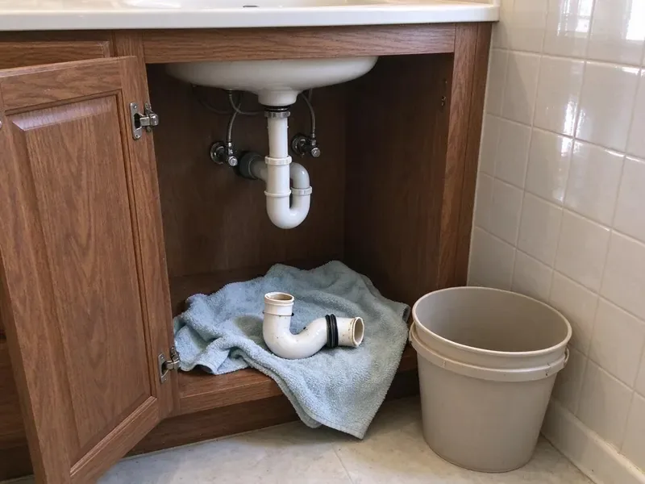

Emergency Plumbing Repair in Charleston, SC
Water coming through the ceiling in Charleston, SC? Shut the main valve first. KBN Plumbing answers around the clock and gets a plumber moving.
- Quick Response Day or Night
- Licensed and Insured
- Warrantied Repairs
- Stocked Service Trucks
Plumbing Emergency Right Now? Get a Plumber on the Way in Charleston, SC.
We answer emergency calls at night, on weekends and on holidays, and we give you a price before we start.
Emergency Plumbing Repair in Charleston, SC
KBN Plumbing takes emergency calls at 2 a.m. the same as 2 p.m. Pipes don't keep hours. A pipe that splits during a hard freeze or a main line that backs sewage into the tub needs a plumber with a stocked truck, and that is who we send.
Some of what we do:
- Same-night response for flooding
- Leaking water heater shutoff, drain-down and replacement
- Emergency drain and sewer clearing

Additional Plumbing Repair Services in Charleston, SC
We offer expert plumbing repair services across Charleston, SC to stop leaks, clear blockages, and keep every fixture working the way it should.


Customers
Why Choose KBN Plumbing for Emergency Plumbing Repair in Charleston, SC?
In a plumbing emergency, the first few minutes decide how much damage you deal with later. We answer quickly, help you shut off water or gas and get a plumber moving toward you.
- Trained Technicians, Our plumbers repair every common emergency and work to South Carolina plumbing code.
- Phone Guidance, We help you find and close the main shutoff or water heater valve immediately.
- Holidays Included, Our emergency crew works weekends and holidays, so you are not stuck until the office opens.
Citywide Coverage
We provide emergency plumbing repair in every neighborhood of Charleston, day and night. Holidays are covered too. Our on-call schedule puts plumbers in different parts of town each night, so whoever is closest gets your call and the wait stays short.
Experienced Team
Each plumber on call has handled burst pipes, sewer backups and everything between. They stay calm. A homeowner with water on the floor needs someone who works steadily and explains what is happening, and that is how our plumbers handle a 3 a.m. call.
Safety-First Approach
For every emergency repair, KBN Plumbing follows standard safety practices and keeps the work area secure. The area gets taped off. Even a corroded pipe or failed valve replacement gets done to code with tested fittings, so nothing was rushed in the dark.
Trusted Certified Charleston Plumbing Services Professionals
At KBN Plumbing, we take pride in licensed, certified plumbing services throughout Charleston, SC. Those papers on the wall mean something. Every repair, install and maintenance visit follows strict safety and quality rules, and the plumbers doing the work carry recognized industry credentials.
Call Us Now PHCC Plumbing Contractor Recognition
PHCC Plumbing Contractor Recognition Better Business Bureau (BBB) Accreditation
Better Business Bureau (BBB) Accreditation Angi Certified Pro
Angi Certified Pro ISO 9001 Quality Management Certification
ISO 9001 Quality Management CertificationEmergency Plumbing Repair Work in Charleston, SC
Gas Leak Detection and Repair in Charleston, SC
A rotten egg smell means get out first. Don't use switches or phones inside. After the gas company says it's safe, we locate the leak with a detector and bubble test, fix the fitting and pressure test before relighting. All gas work follows South Carolina safety codes in Charleston, SC.

Severe Clog Removal in Charleston, SC
A main line clog backs water into the lowest drain in the house, usually a tub or floor drain. It isn't clean water. We clear it with a cable machine or a hydro-jetter depending on whether it is grease, wipes or tree roots, then run a camera to see why it happened. Drains in Charleston, SC are usually clear within the hour.
Commercial Emergency Plumbing Repair in Charleston
Apartments, offices and stores cannot sit without water. Tenants call fast. Restroom backups, grease clogs and failed heaters get handled quickly, and we work with managers so the shutoff hits as few units as possible.
Overflowing Toilet Emergency Repair in Charleston, SC
Water from an overflow soaks flooring and the ceiling below fast. Close the supply. We clear the clog, replace the fill valve and flapper if they are worn and check the drain line past the toilet for a deeper blockage, and if the wax ring has failed or the bowl is cracked, we replace it. We sanitize the area afterward.
Commercial Emergency Plumbing in Charleston
A restaurant with a backed-up floor drain cannot serve. Every hour closed adds up. We handle commercial emergencies like grease line clogs, failed commercial water heaters and broken supply mains, and we stage the work so the rest of the building keeps running while one section is down. Charleston businesses reach us day or night.
Sewer Line Backup Emergency in Charleston
Raw sewage in the house is a health hazard. Stop using water. We open the cleanout, clear the main and run a camera to see if roots, a sag or a broken pipe caused it, so you know whether you need a repair or a cleaning. Charleston backups include cleanup.
Pipe Bursts in Older Charleston Homes
Older houses still have galvanized steel in the walls, and it rusts from the inside out. It fails without warning. Our plumbers shut off the supply, cut out the failed section and tie in PEX or copper with transition fittings, then check how much more of the galvanized is close to failing. We'll also help you dry the area to head off mold.

Gas Leak Emergency Service in Charleston
Smell gas? Leave the house first. After you're out and the utility has been called, our licensed plumbers locate the leak, replace the bad fitting or pipe and test everything before turning the gas back on. Charleston gas work gets tested before relighting.
Emergency Plumber Near You in Charleston, SC
Type 'emergency plumbing repair near me' in Charleston, SC and you want someone local who answers. KBN Plumbing is that company. Our plumbers are spread across the area each night, so the one closest to you gets the call and heads out with a truck already loaded for the common emergencies. Drive times are short.
Being local means shorter drives and knowing the homes in this area. That saves time. We know which neighborhoods have galvanized pipe, which have older water heaters in the attic and where the main shutoffs usually are, so the diagnosis starts before we park. Phone us the moment something breaks.
KBN Plumbing at a Glance
- Licensed and insured plumbers serving Charleston, SC
- 24/7 emergency service with same-day scheduling
- Upfront, flat-rate pricing before work begins
- 4.8-star rated by 596+ South Carolina customers
Charleston Map
Charleston Information
- Population
- 155,369
- Area codes
- 843/443/803
- Service area
- Charleston and towns within a 40 mile drive
- Nearby
- Mount Pleasant, North Charleston, Goose Creek, Summerville
Warm weather for most of the year means water heaters, irrigation lines and outdoor fixtures in South Carolina see steady use with little seasonal rest. Weather like that is behind a lot of burst pipes, failed water heaters and sewer backups in Charleston homes, and a fast shutoff limits the damage.
Talk to a Plumber
Call KBN Plumbing for reliable plumbing work done by licensed pros in Charleston, SC.
Our Specialized Plumbing Services in Charleston, SC
At KBN Plumbing, you get every kind of plumbing service from one company across Charleston, SC. We go from leak detection all the way to full system installations, for homes and commercial buildings, and we do it quickly at a fair price. Explore our core services below:


Our Emergency Plumbing Steps in Charleston, SC
Here is what happens after you call KBN Plumbing with an emergency in Charleston.
Request a Quote
Call (864) 588-3813 and tell us what is happening, and we will help you shut off water or gas right away. We dispatch a plumber without delay.
Stabilize the Situation
On arrival, we stop the leak or backup and look at what got wet. We give you a written price for the repair before starting.
Repair and Restore
We make the repair, test the system and restore service. We clean up and explain how to prevent a repeat emergency.
Frequently Asked Questions About Emergency Plumbing Repair in Charleston
A simple clog cleared after hours might run $150 to $350. Bursts cost more. For a burst line or slab leak, expect $500 to $2,000 or more, driven by labor, access and the equipment needed. You'll get the price first.
A water bill that jumps for no reason. Damp spots are another. Musty or sewer smells, low pressure everywhere and running water sounds with nothing on can mean a slab leak or hidden broken pipe.
Not all of them, but maintenance cuts the odds. Small drips become big ones. Annual checks, no grease down the sink and insulated pipe before winter prevent most of the emergencies we see. Pipes in crawlspaces, exterior walls and unheated garages are the ones most likely to burst during a South Carolina cold snap, since many homes were built with little insulation around them.
Shut off the water, then call. Leave gas alone. DIY repairs on pressurized lines, gas or anything near electrical often make the problem worse or create a hazard, so the best move is to close the main valve and call us.
Get everyone out, pets included. Don't flip any switches. From outside, call 911 or the utility first, then call us, and a licensed plumber will repair the leak once it's safe.
Anything that threatens your home or health right now. Burst pipes always count. Flooding leaks, sewer backups, gas smells and no water at all are emergencies, and the test is whether waiting until morning makes it worse.
Big leaks, especially slab leaks, soak the soil under the house and can shift or crack a foundation. Most South Carolina homes sit on crawlspaces or slabs rather than basements, which puts supply and drain lines either under the floor or under concrete. We stop the leak and dry the area fast to limit that.
Emergency repairs carry the same written workmanship warranty as scheduled work. Materials carry manufacturer warranties too.
What Our Customers Say About Our Plumbing Experts

Monica A.
Our water bill nearly doubled in one month with no change in how we used water. The tech checked the meter, heard the leak under the hallway with his equipment, and opened a hole about a foot square. Fixed the same day.
Slab Leak Repair · Bluffton, SC
Carlos V.
Our house still had galvanized pipe, and upstairs the shower was a trickle. The crew repiped everything in PEX over three days and patched every drywall hole before they left. The pressure difference is night and day.
Repiping · North Charleston, SC
Robert G.
The camera showed a full break in our clay sewer line near the street. KBN Plumbing replaced it with a trenchless pipe burst, so the only digging was two small pits in the yard. They let us watch the footage before and after.
Sewer Line Replacement · Mount Pleasant, SC
Lisa C.
Water was pouring out from under the washing machine on a holiday weekend. KBN Plumbing talked me through closing the valves over the phone and had a plumber at the house within ninety minutes. It was a burst fill hose.
Emergency Plumbing · Hilton Head Island, SC
Brian W.
I smelled gas behind the dryer and called right away. The plumber found a corroded flex connector, replaced it, and pressure tested the whole line before turning the gas back on. He let me watch the gauge hold steady for fifteen minutes.
Gas Line Repair · Bluffton, SCJessica T.
We were adding a gas range in a kitchen remodel and needed a new line run from the meter. The plumber pulled the permit, ran the pipe through the crawl space, and had it inspected and approved within the week.
Gas Line Repair · Charleston, SC